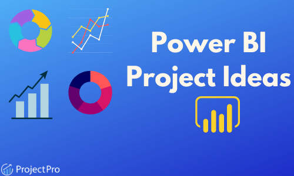
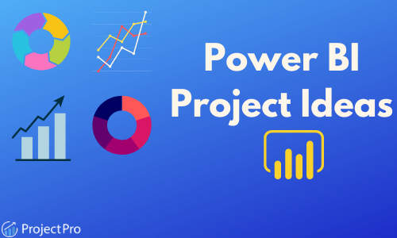

This Auto Sales Data Analysis Project offers a deep dive into the intricacies of market trends and consumer preferences.
The project's comprehensive analysis reveals the dominance of classic and vintage cars in sales, alongside fascinating seasonal fluctuations
– a notable November peak and a December downturn. Highlighting key customers and global sales distribution, the analysis shows the USA leading in imports.
The project also uncovers product popularity variances and significant year-to-year shifts in revenue.
This endeavor presents a narrative of market dynamics, providing invaluable insights into the auto sales industry.
 

This project provides a deep dive into the retail landscape of Turkish shopping malls,
leveraging extensive data analysis to uncover the nuanced ways in which demographic factors,
seasonal trends, and payment preferences influence sales. This study not only identifies key patterns
and behaviors among consumers but also crafts actionable strategies for retail optimization.
Through meticulous data cleaning, insightful analysis, and comprehensive visualizations, this project offers
valuable insights for anyone looking to enhance sales performance in Turkey's vibrant retail sector.
This is the data cleaning in pandas using the call list data .

This is the Exploratory Data Analysis in pandas using the world population data .
This project provides a deep dive into the retail landscape of Turkish shopping malls,
leveraging extensive data analysis to uncover the nuanced ways in which demographic factors,
seasonal trends, and payment preferences influence sales. This study not only identifies key patterns
and behaviors among consumers but also crafts actionable strategies for retail optimization.
Through meticulous data cleaning, insightful analysis, and comprehensive visualizations, this project offers
valuable insights for anyone looking to enhance sales performance in Turkey's vibrant retail sector.

These Tableau projects feature captivating visualizations of auto sales and bike sales data, analyzed using SQL. They provide accessible insights, simplifying complex data for all viewers.
Each project serves as a testament to Tableau's efficacy in translating raw data into actionable insights.
Additionally, they include other projects completed during my learning phase,
showcasing a diverse range of topics and techniques. Through these endeavors, valuable lessons are gleaned, demonstrating the transformative potential of data visualization.
By showcasing trends and patterns in an easily understandable manner, these projects facilitate informed decision-making and deeper understanding of market dynamics.
They exemplify the importance of combining technical skills with data visualization prowess to derive meaningful conclusions from datasets. Whether for educational purposes or professional development,
these projects offer invaluable experiences in harnessing the power of data to drive insights and innovation.
In this project, I harnessed Excel to analyze a comprehensive coffee sales dataset.
Using advanced functions like XLOOKUP and INDEX-MATCH, I integrated data across multiple sheets, revealing key sales insights.
I transformed raw data for clarity, converting abbreviations and standardizing formats, ensuring data integrity.
Through pivot tables and slicers, I unveiled patterns in coffee preferences by country and season, and identified top customers by sales.
This analysis was distilled into a README for clear communication of findings.
The project exemplifies my ability to derive meaningful insights from complex datasets and my proficiency in data manipulation and presentation.
In my recent project analyzing sales at a bike store, I really got to flex my SQL skills by diving deep into a treasure trove of sales data.
It was like being a detective, uncovering the hidden patterns of customer behavior and product popularity.
One of the coolest finds was how the Surly Ice Cream Truck frameset was a big hit with customers –
it was flying off the shelves! I also noticed some ups and downs in the sales figures over the year,
which got me thinking about how we can better predict these changes in the future.
Plus, I discovered a bunch of customers who weren't spending much, which seems like a golden opportunity for the store to boost sales.
And talk about brand power – Electra and Trek were ruling the roost in terms of popularity.
This project wasn't just a numbers game for me; it was a chance to uncover insights that could really help the business grow.